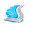

Envoyer un autre jour
Réglages
À laisser vide en général. Plusieurs agendas : identifiants séparés par des virgules.
Rempli tout seul quand MyOsteoFlow est ouvert. Sinon : MyOsteoFlow, Réglages, Doctolib.

Recherche d’MyOsteoFlow…
À laisser vide en général. Plusieurs agendas : identifiants séparés par des virgules.
Rempli tout seul quand MyOsteoFlow est ouvert. Sinon : MyOsteoFlow, Réglages, Doctolib.